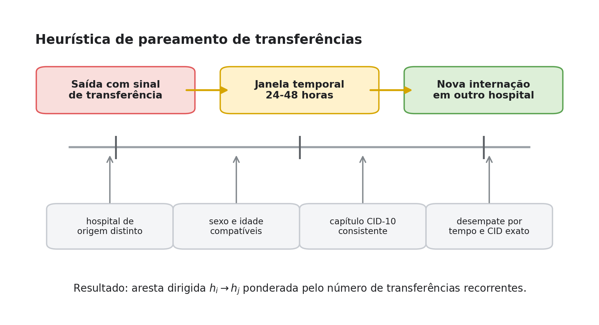
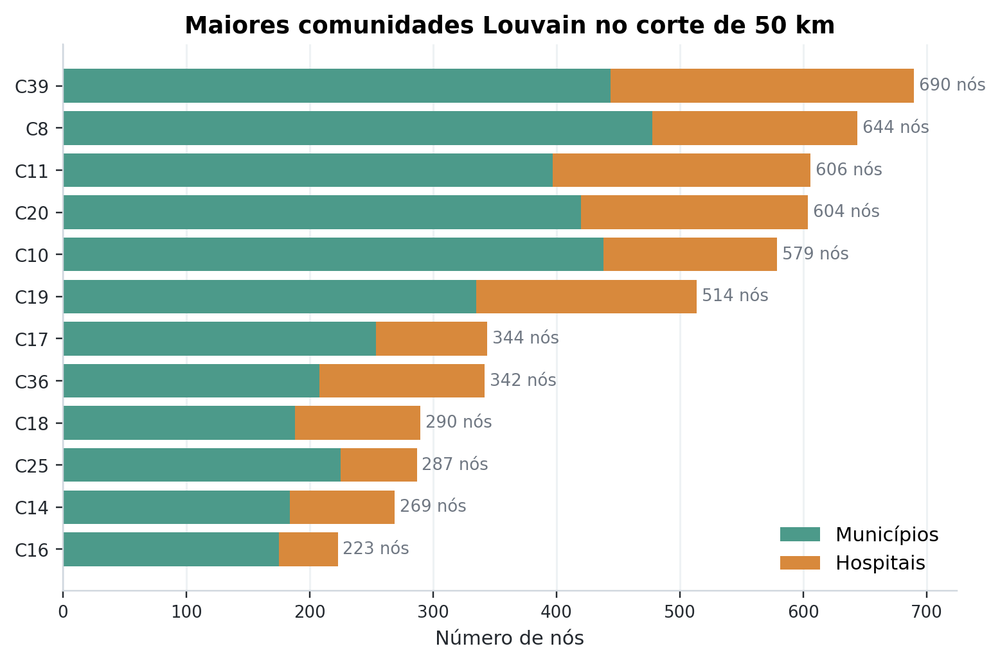

MC859 · Entrega final SUS Graph Project
Análise de fluxos e resiliência do SUS via grafos
Modelamos internações e transferências hospitalares públicas de 2021 como uma rede nacional para analisar polos, dependências e desalinhamentos regionais.
Lucas Cardoso · RA 246125
Ricardo Andrade Oliveira Bello · RA 247326
Dados: doi.org/10.5281/zenodo.20805195
Entrega final Interface guiada
A entrega final é uma rede analisável e uma visualização guiada.
A interface não tenta desenhar tudo. Ela organiza a exploração por presets: corredores de 25/50 km, hospitais centrais, stress test, comunidades e dependências municipais.
Mapa leve
Dashboard
Resultados narrados
Metodologia auditável
O que a interface resolve
reduz o grafo para camadas interpretáveis;
preserva desempenho em computadores comuns;
conecta mapa, dashboard e achados narrativos;
permite enxergar polos e dependências sem navegar por tabelas.
Pergunta do projeto Mensagem central
A rede pública hospitalar brasileira aparece conectada no agregado, mas essa conectividade esconde dependências locais.
11,6 mi linhas SIH reconciliadas em 2021
5.875 hospitais públicos/SUS no escopo
188 mil arestas no grafo público final
Como desenvolvemos Dados e escopo
SIH/SUS
Internações, município de residência, hospital, diagnóstico, procedimento, permanência, valor, óbito e sinais de transferência.
CNES
Identificação de estabelecimentos, vínculo público/SUS e regiões oficiais de saúde usadas na comparação regional.
IBGE
Códigos territoriais e apoio geográfico; quando faltava coordenada CNES, usamos centróide municipal.
O pacote derivado usado na entrega está publicado no Zenodo com DOI, manifesto e README de dados.
Instâncias de grafo Da base ao modelo
O pipeline transforma registros hospitalares em instâncias filtradas.
Selecionar SIH
→
Enriquecer com
→
Gerar nós, arestas
município → hospital: mínimo 5 ocorrências
hospital → hospital: mínimo 2 ocorrências
cortes de 25 km e 50 km
Arestas hospital-hospital Heurística conservadora

Arestas hospital-hospital representam continuidade provável agregada, não rastreamento individual perfeito.
Transferência foi inferida dentro de grupos de paciente provável.
chave provável: nascimento + sexo + idade + município;
busca em pandas apenas dentro desse grupo ordenado por data;
janela de 24 a 48 horas após a saída;
continuidade por capítulo CID-10;
destino = CNES da próxima internação candidata.
Métodos de grafos O que cada algoritmo mede
Cada algoritmo responde a uma pergunta operacional.
Método Pergunta respondida Leitura no projeto Betweenness Quais hospitais conectam caminhos? Polos estruturais e hospitais-ponte. Louvain Que comunidades funcionais emergem? Blocos de fluxo que podem divergir de regiões oficiais. Supressão dinâmica O que acontece ao remover polos centrais? Robustez global versus fragilidade local. K-caminhos A segunda rota é uma alternativa próxima? Redundância realista dos corredores principais.
Algoritmo 1 Centralidade de intermediação
Pergunta
Quais hospitais funcionam como pontes entre municípios, regiões e corredores de atendimento?
Como funciona
Calcula quantas vezes um hospital aparece em caminhos mínimos da projeção ponderada, usando distância como custo.
Resultado
Hospitais especializados, universitários e regionais aparecem como polos estruturais, não apenas como hospitais de grande volume.
Hospitais de maior intermediação no corte de 50 km sobre corredores filtrados.
Algoritmo 2 Comunidades Louvain
Pergunta
Que agrupamentos funcionais aparecem quando olhamos os fluxos, sem impor previamente as regiões oficiais?
Como funciona
O Louvain busca partições com alta modularidade: muitas conexões internas e poucas conexões externas.
Resultado
No corte de 50 km, surgiram 43 comunidades. Elas sugerem blocos funcionais que nem sempre coincidem com REGSAUDE.

Maiores comunidades no corte de 50 km, separando municípios e hospitais.
Algoritmo 3 Supressão dinâmica
Pergunta
A rede se fragmenta quando removemos hospitais que atuam como pontes centrais?
Como funciona
Remove o hospital mais central, recalcula a centralidade e mede maior componente e caminho médio a cada passo.
Resultado
Após 5 remoções no corte de 50 km, a maior componente ainda manteve 99,47% dos nós; o caminho médio subiu 1,26%.
A robustez global permanece alta, mesmo com remoção progressiva de polos.
Algoritmo 4 K-caminhos mais curtos
Pergunta
Quando existe uma segunda rota no grafo, ela é próxima o suficiente para ser uma alternativa plausível?
Como funciona
Compara o menor caminho com o segundo menor caminho em pares de alto volume, usando distância acumulada.
Resultado
Entre pares com alternativa, a razão média d(k₂)/d(k₁) foi 3,05; em 27 de 29 casos, a segunda rota passou de 2x.
Alternativas existem no grafo, mas frequentemente são longas demais para serem substitutos fortes.
Comparação regional Regiões oficiais de saúde
Parcela do fluxo recorrente que cruza região oficial de saúde.
43,80%
do fluxo residência-hospital no corte de 50 km cruza região oficial de saúde.
Isso não significa necessariamente cruzar estado: REGSAUDE divide regiões dentro da própria UF.
Objetivos da proposta Foram cumpridos?
Os objetivos foram cumpridos em essência, com mudança de escala e escopo.
Cumprido Coleta, tratamento e modelagem da rede hospitalar como grafo.
Ampliado O recorte passou de uma análise mais local para Brasil 2021, restrito a hospitais públicos/SUS.
Entregue Algoritmos, resultados auditáveis, dataset com DOI, relatório e UI interativa.
Limitações Como mitigar
As limitações vêm de dados, espaço, tempo e inferência.
SIH mostra acesso realizado, não demanda reprimida.
Volume anual não mede capacidade simultânea ou especialidade.
Haversine não é tempo real de viagem.
Transferência é continuidade provável, não identificação perfeita.
Como modificaríamos o projeto
integrar leitos por competência, ocupação e especialidades;
usar tempo de deslocamento por malha viária;
validar um estado/macrorregião com dados locais;
substituir a heurística por registros explícitos de regulação quando disponíveis.
Conclusão Mensagem final
Grafos não substituem planejamento em saúde, mas tornam visível onde a rede observada depende demais de poucos caminhos.
Implementação: github.com/lcardosott/sus-graph-project
Dados: doi.org/10.5281/zenodo.20805195
Visualização: lcardosott.github.io/sus-graph-project